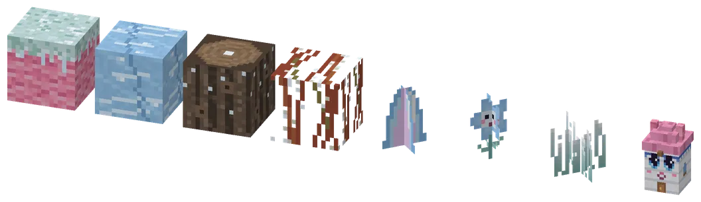
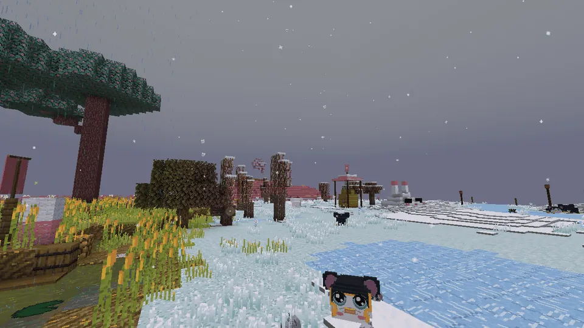
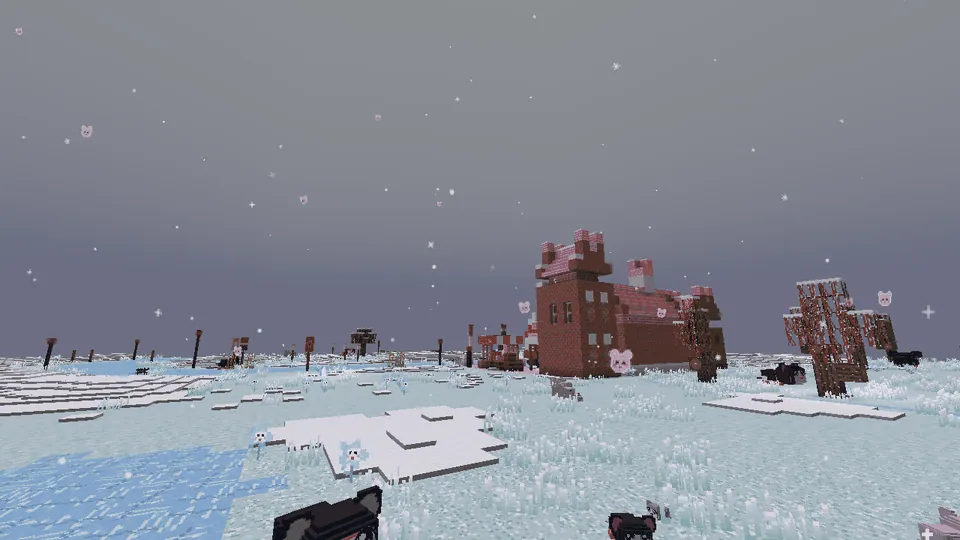
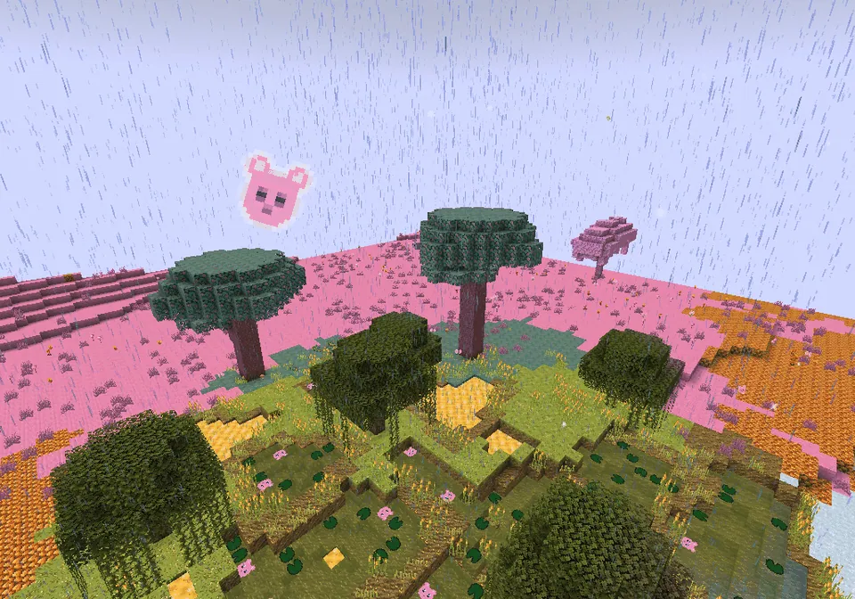

What spawns hereWat spawnt hier
| MobWezen | GroupGroep | WeightGewicht | Group sizeGroepsgrootte |
|---|---|---|---|
| Guh | animaldier | 100 | 3–5 |
StructuresBouwwerken
De Guhpolder
A new, rare, ice-cold and very flat biome in the Guhmension (guhs:guhpolder, about 2.5% of the land): frosty rijpgras with glitter, knotwilgen with snow caps along frozen ditches, little frozen ponds, snowman-guh hills with a guh face, glowing ijspegelguh-kristallen shaped like a guh ear, blue guh-ijsbloempjes with a tiny face (pick one for light blue dye), and here and there a little guh-molentje. It snows a lot. Only guhs live here: no Mikas. In the middle of most polders lies the Elf-Guhjestocht.
Een nieuw, zeldzaam, ijskoud en heel plat bioom in de Guhmensie (guhs:guhpolder, zo'n 2,5% van het land): berijpt rijpgras met glitters, knotwilgen met sneeuwmutsjes langs bevroren slootjes, kleine bevroren vennetjes, sneeuwguh-heuveltjes met een guhgezicht, gloeiende ijspegelguh-kristallen in de vorm van een guhoor, blauwe guh-ijsbloempjes met een piepklein gezichtje (pluk er een voor lichtblauwe kleurstof), en hier en daar een guh-molentje. Het sneeuwt er veel. Hier wonen alleen guhs: geen Mika's. Midden in de meeste polders ligt de Elf-Guhjestocht.

Polder blocksPolderblokken
Rijpgras, polderijs (never melts, no snow on it; 2 packed ice + 2 snowballs make 2), knotwilgstam (4 spruce planks) and knotwilgtakjes, the ijspegelguh-kristal (gives light), the guh-ijsbloempje, rijpsprietjes and the guh-molentje.
Rijpgras, polderijs (smelt nooit, er blijft geen sneeuw op liggen; 2 pakijs + 2 sneeuwballen worden er 2), knotwilgstam (4 sparrenplanken) en knotwilgtakjes, het ijspegelguh-kristal (geeft licht), het guh-ijsbloempje, rijpsprietjes en het guh-molentje.
Guh-sneeuw in the GuhpolderGuh-sneeuw in de Guhpolder

Guh-sneeuw
Soft, sparse flakes, and now and then a tiny pink guh head.Zachte, losse vlokjes, en af en toe een piepklein roze guhkopje.

No snow piling upGeen sneeuw die blijft liggen
The polder keeps exactly its own snow and ice.De polder houdt precies zijn eigen sneeuw en ijs.

Above the landBoven het land
When it snows in the Guhpolder you no longer get the busy vanilla snow curtain: a few soft flakes drift down around you, swaying in a light wind and melting when they land, and one in ten is a tiny pink guh head. The weather also doesn't pile up snow or freeze water there any more, so the Elf-Guhjestocht and the polder stay exactly as they were built. Everywhere else the weather is normal (the new Sneeuwguhtoendra has its own storms).
Als het sneeuwt in de Guhpolder krijg je niet meer het drukke gewone sneeuwgordijn: er dwarrelen een paar zachte vlokjes om je heen, die wiegen in een zacht windje en smelten als ze landen, en een op de tien is een piepklein roze guhkopje. Het weer legt daar ook geen sneeuw meer neer en laat geen water meer bevriezen, dus de Elf-Guhjestocht en de polder blijven precies zoals ze gebouwd zijn. Overal anders is het weer gewoon (de nieuwe Sneeuwguhtoendra heeft zijn eigen stormen).
At a glanceIn het kort
- AdvancementsVooruitgangen
- Brrr, de Guhpolder! · Een bloemetje van ijs · Vers gemalen · Een vadsige Pinguh